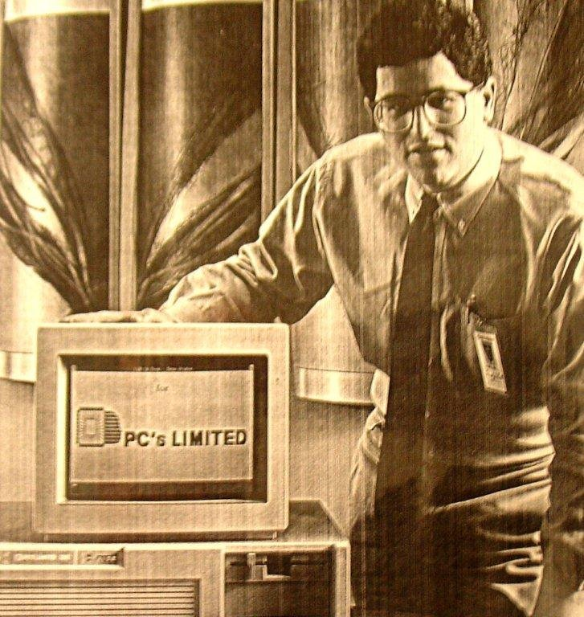

About
Dell Inc. is an American technology enterprise that specializes in the development, distribution, maintenance, and support of computing devices and associated services. It operates under the ownership of its parent corporation, Dell Technologies. Dell engages in the retail of personal computers (PCs), servers, data storage units, network switches, software, computer accessories, high-definition televisions (HDTVs), cameras, printers, and electronics manufactured by various other companies. The company is recognized for its effective supply chain management and e-commerce practices. This involves direct sales to consumers and the customization of PCs based on customer preferences.
History
Michael Dell founded Dell Computer Corporation, initially known as PC's Limited, in 1984 while he was a student at the University of Texas at Austin. The startup commenced from Michael Dell's off-campus dormitory room at Dobie Center. The business aimed to sell IBM PC compatible computers constructed from readily available components. Michael Dell believed that by directly selling personal computer systems to customers, PC's Limited could gain a better understanding of customers' needs and offer the most effective computing solutions to meet those needs. Upon receiving about $1,000 in expansion capital from his family and completing his freshman year at the University of Texas, Michael Dell dropped out of college to focus full-time on his fledgling business. In 1985, the company introduced its first proprietary computer design, the "Turbo PC," retailing for $795. This computer featured an Intel 8088-compatible processor capable of running at a maximum speed of 8 MHz. PC's Limited advertised the systems in national computer magazines for direct sale to consumers and custom-assembled each ordered unit according to specific options. Though not the pioneer, PC's Limited became one of the first companies to succeed with this direct sales business model. The company grossed more than $73 million in its inaugural year.
In 1987, the company dropped the PC's Limited name and rebranded as Dell Computer Corporation, expanding globally. The new name better reflected its business market presence and resolved issues related to using "Limited" in a company name in certain countries. Dell established its first international operations in Britain, followed by 11 more within the next four years. By June 1988, Dell Computer's market capitalization increased to $80 million from its initial public offering of 3.5 million shares at $8.50 a share. In 1989, Dell Computer initiated its first on-site service programs to compensate for the absence of local retailers ready to act as service centers.
Tech Innovation & Diversity
During the 1980s, Dell embarked on a trailblazing journey, introducing an array of cutting-edge products that revolutionized the tech market. Among these offerings were:
- Turbo PC: Marked as one of Dell's inaugural personal computers, the Turbo PC, launched in 1985, boasted an Intel 8088-compatible processor clocked at speeds of up to 8 MHz. Its allure lay in its affordability and customizable features, catering to varied consumer needs.
- Servers and Networking Gear: In addition to personal computers, Dell expanded its portfolio to include servers, network switches, and related networking equipment. These products targeted corporate clientele, fortifying Dell's foothold in the burgeoning IT industry.
- Data Storage Solutions: Recognizing the surging demand for data management, Dell ventured into providing storage devices like hard drives and other storage systems, catering to the escalating need for efficient data handling.
- Printers and Computer Accessories: Addressing user demands for supplementary hardware and consumables, Dell diversified its offerings to include printers and various computer accessories.
- Consumer Electronics: Beyond computers, Dell ventured into consumer electronics, offering top-tier electronics from various manufacturers, including high-definition televisions (HDTVs), cameras, and other electronic devices.